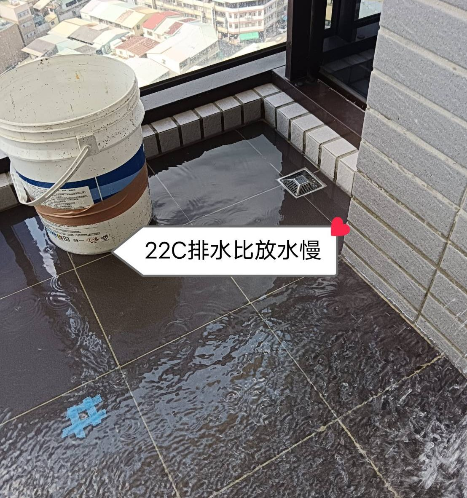
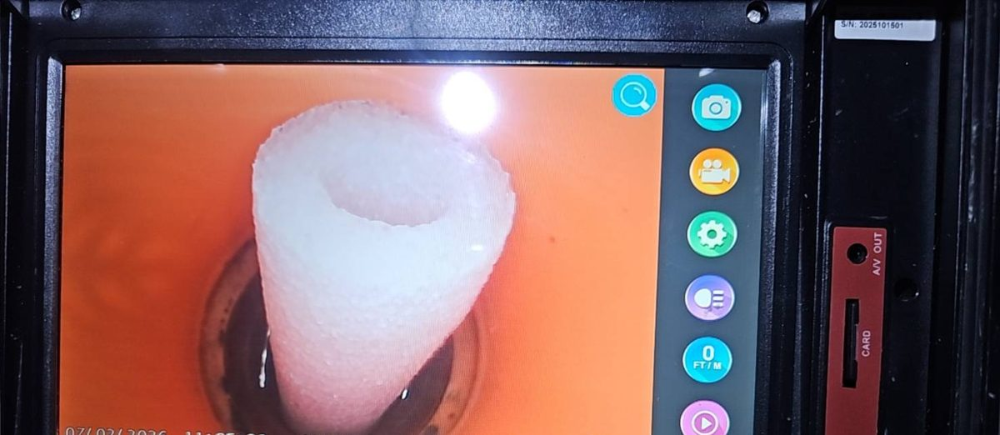
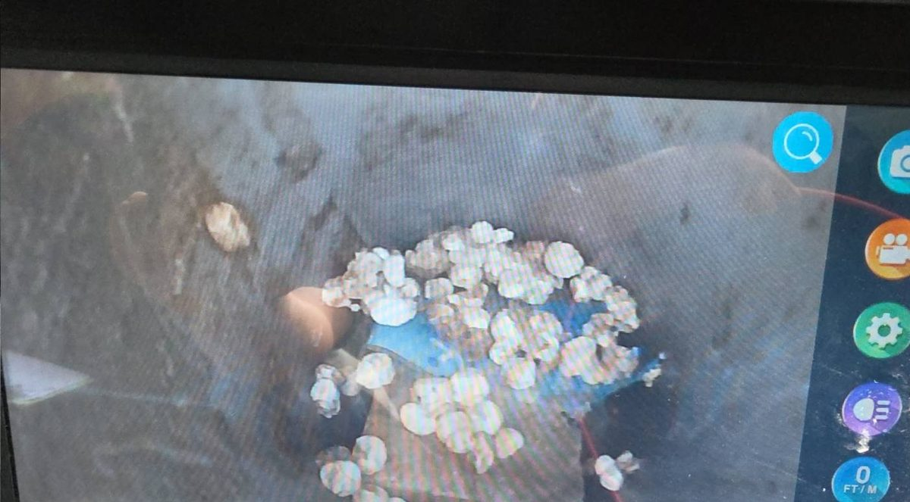
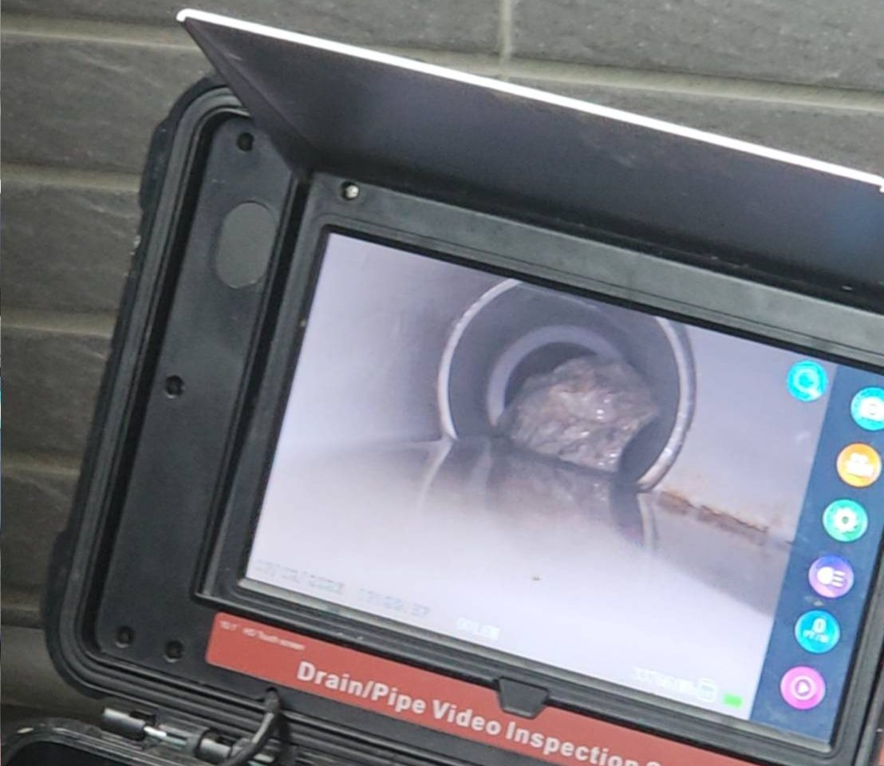
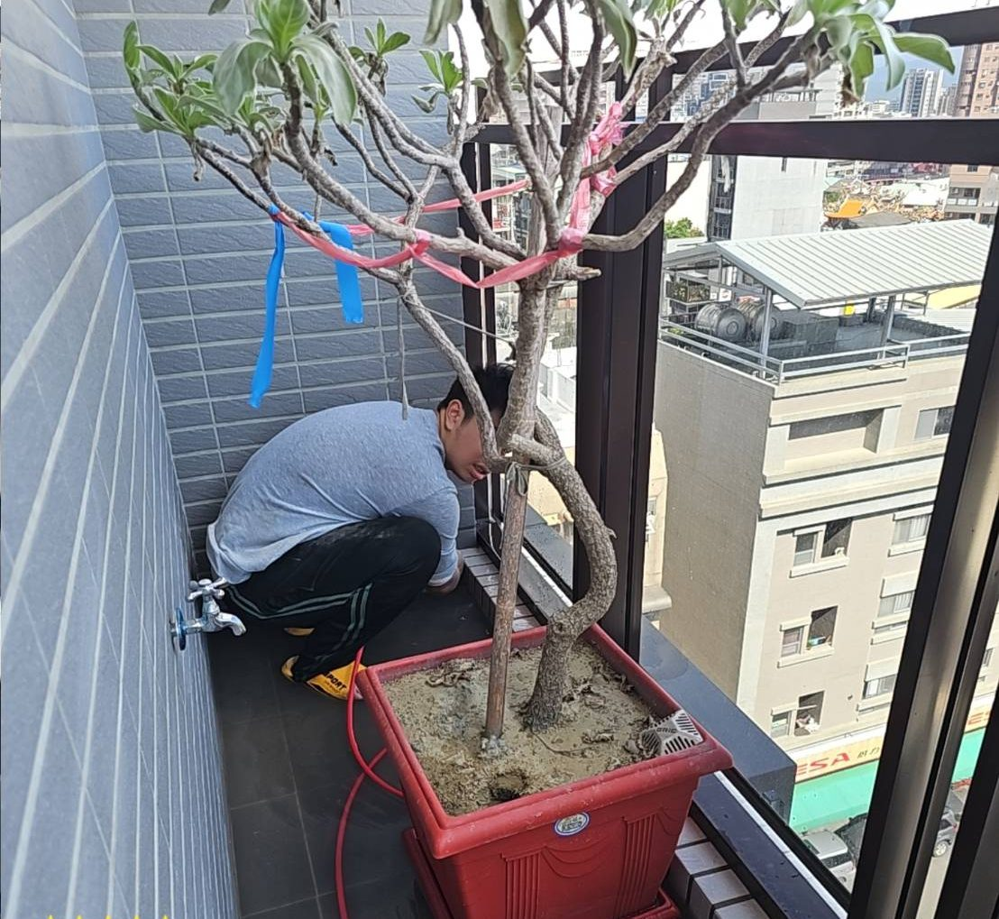
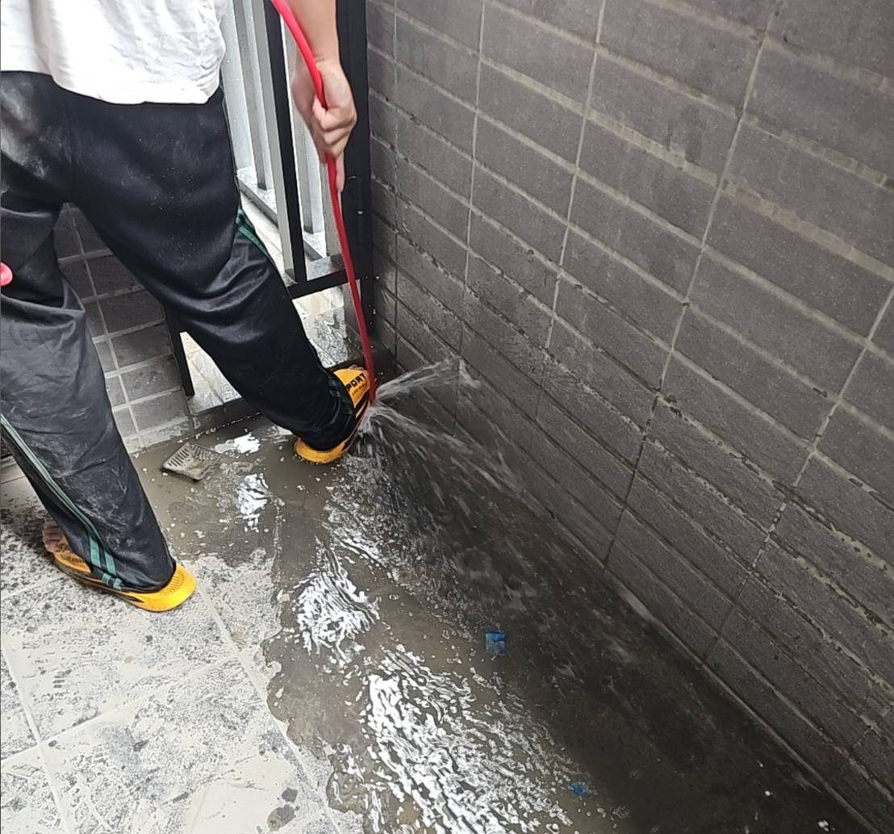

交屋前完成，有效降低住戶投訴
※ 交屋前完成，有效降低住戶投訴
真實案場記錄，讓成果說話






建商驗屋時發現多戶陽台排水慢、無法排水。內視鏡逐戶看管，找出水泥塊、保麗龍保護管、泡棉等施工殘留物。依建商提供的孔位清單分次進場，大樓各戶、地下室及透天店面累計清洗超過 110 支管。
同一個案子中，清管時發現部分樓層下方天花板、存水彎蓋有滲水，水平管有塞管需換管的位置，都整理成清單回報建商，讓建商在交屋前先處理。
電話或 LINE 詢問，免費評估

掃描加入 LINE
快速詢價